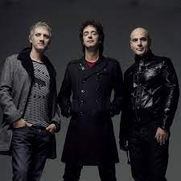

Soda Stereo
Soda Stereo fue una banda de rock argentino formada en Buenos Aires en 1982, y está considerada como una de las bandas más importantes y exitosas de la música latina. La banda estaba compuesta por Gustavo Cerati (voz y guitarra), Zeta Bosio (bajo y coros) y Charly Alberti (batería).
Soda Stereo se destacó por su habilidad para fusionar diferentes estilos musicales, desde el rock y el pop hasta el reggae, el funk y la electrónica, creando un sonido único y distintivo que influenció a muchas bandas en América Latina.
La banda lanzó siete álbumes de estudio, entre ellos "Signos", "Doble Vida" y "Canción Animal", que se consideran algunos de los más importantes e influyentes en la historia del rock latinoamericano. Sus letras, escritas principalmente por Cerati, abordan temas como el amor, la política, la tecnología y la vida en la ciudad.
Soda Stereo también se destacó por su innovador y elaborado diseño visual, con shows en vivo y videos musicales que mostraban un fuerte compromiso estético y artístico. La banda se separó en 1997, pero se reunió brevemente en 2007 para una gira de despedida que incluyó conciertos en Argentina, Chile, México, Estados Unidos y España.
El legado de Soda Stereo sigue siendo muy importante en la música latina, y su influencia se puede ver en muchas bandas y artistas contemporáneos, como Zoé, Mon Laferte, Café Tacvba y Los Bunkers, entre otros.